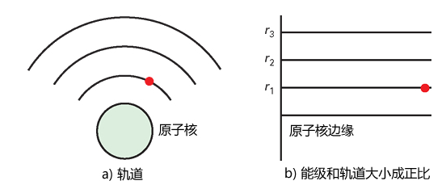
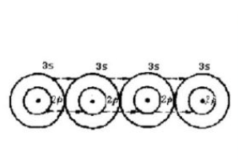
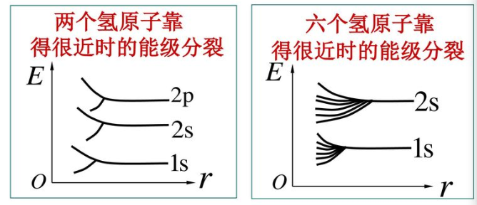
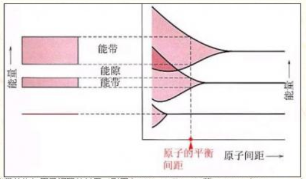
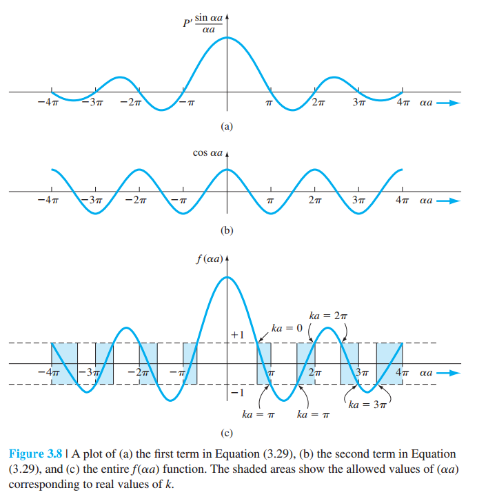
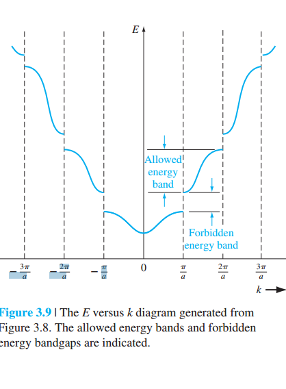

第一章 半导体中的电子状态
1.1 半导体的晶格结构和结合性质
1.1.1 金刚石型结构和共价键
硅(Si)和锗（Ge）等元素都是属于IV族元素，原子的最外层都具有4个价电子。
大量的硅(Si)和锗（Ge）组成的晶体靠共价键结合，形成金刚石结构的晶格，。
1.1.2 几个重要的术语：
- 晶胞：构成晶体的最基本的几何单元称为晶胞（Unit Cell）
- 晶格：晶体内部原子排列的具体形式一般称之为晶格(lattice)
- 晶面：晶体在自发生长过程中可发育出由不同取向的平面所组成的多面体外形，这些多面体外形中的平面称为晶面（crystal face），晶面可以用晶向指数来表示。
- 晶向：在晶体中,任意两个原子之间的连线称为原子列,其所指方向称为晶向。
- 晶向指数：标志晶向的一组数称为为晶向指数，一般用米勒（Miller）指数，其定义：
- 确定该晶面在晶胞坐标轴上的截距(依序为x, y, z轴)
- 取这些值的倒数（默认∞的倒数为0）
- 将这些倒数化作最简整数比
- 用括号将它们括起
- 共价键：相同核外能量的两个价电子（原子最外层的电子），由于自旋方向不同而结合在一起，形成共价键。

由此可以得到：
- 不同的晶向的晶面上的原子的密度不同，最密集的是[111]
- 金刚石结构的原胞每个顶端原子是和周围8个原胞公用，面中心的原子和2个原胞公用，而内心的4个原子都是属于1个原胞，所以1个原胞的平均的原子数目$n$是： $$ n = 8\times\frac{1}{8}+6\times\frac{1}{2}+4=8$$
- 由此，已知硅的晶格常数$a_{Si}=0.54nm$, 则硅的密度$p_{Si}$（每立方厘米的原子数）是： $ p_{Si} = \frac{8}{a_{Si}^3}=\frac{8}{(0.54\times10^{-7})^3}=5.08\times10^{22}(/cm^3)$
- 同理，已知锗的晶格常数$a_{Ge}=0.57nm$, 则锗的密度$p_{Ge}$（每立方厘米的原子数）是： $ p_{Ge} = \frac{8}{a_{Ge}^3}=\frac{8}{(0.57\times10^{-7})^3}=4.32\times10^{22}(/cm^3)$
1.1.3 其他类型的半导体材料的原胞结构
| 闪锌矿结构：和金刚石结构类似，只是体内的原子由另一种原子组成，比如III-V族化合物，如砷化镓等 | 纤锌矿结构：II-VI族化合物，如硫化锌等 |
 |

|
1.2 半导体的电子状态和能带
1.2.1 原子的能级和晶体的能带
1.2.1.1 单一原子的能级
- 能级（Energy level）
- 能级理论是一种解释原子核外电子运动轨道的一种理论。它认为电子只能在特定的、分立的轨道上运动，各个轨道上的电子具有分立的能量，这些能量值即为能级。电子可以在不同的轨道间发生跃迁，电子吸收能量可以从低能级跃迁到高能级或者从高能级跃迁到低能级从而辐射出光子。氢原子的能级可以由它的光谱显示出来。

1.2.1.2 晶体中的电子共有化运动
- 电子共有化运动（the electron common movement）
- 晶体中不同原子相似壳层的交叠，使电子可以不仅仅局限在单一原子上，而是可以在整个晶体中相似能量壳层中运动，称为电子共有化运动。

1.2.1.3 能级分裂
- 能级分裂（Energy level splitting）
- 两个或多个原子靠近时，同一能级壳层的核外电子的能级会产生微小的扰动（同时受到两个或多个原子核的影响），从而产生能级分裂，一般情况下，有n个原子，就会产生n个分裂。

1.2.1.4 形成能带
- 能带（Energy band）
- 当大量原子共存于内部结构规律的晶体中时，密集的能级就变成了带状，即能带。能带结构有两种，一种时电子存在的能带，称为允带，不能存在的称为禁带。

1.2.2 半导体中电子的状态和能带的解析
自由电子的波动方程
微观粒子，包括电子，具有波粒二象性。
对于粒子特性，若设电子质量为$m_0$，以速度$\overrightarrow{v}$自由运动，则其动量$\overrightarrow{p}$和能量$E$分别为： $$ \overrightarrow{p} = m_0 \overrightarrow{v} \tag{1-1}$$, $$ E = \frac{1}{2}\frac{p^2}{m_0} \tag{1-2}$$，其中$p^2=|\overrightarrow{p}|^2$。
同时，这个电子又有波的特性，根据德布罗意物质波公式，有： $$ \Phi(\overrightarrow{r}, t)=A\exp(i(\overrightarrow{k}\cdot\overrightarrow{r}-\omega t)) \tag{1-3}$$，式中$A$为常数，$\overrightarrow{r}$是波矢径，其方向是波传播的方向，其值定义波的位置，$\overrightarrow{k}$为波矢量，其方向和波矢径一致，且$k=|\overrightarrow{k}|=\frac{2\pi}{\lambda}$，这里$\lambda$是波长，$\omega$是波的角频率，$\omega=2\pi\nu$，$\nu$是波的频率。
自由电子的波动方程
自由电子既有波动特性，又有粒子特性，其粒子的能量和动量与波的角频率和波矢量之间的关系是： $$ E = h\nu = h \frac{\omega }{2\pi} = \hbar\omega \tag{1-5}$$ $$ \overrightarrow{p} = \hbar \overrightarrow{k} \tag{1-6}$$， 式中$\hbar=\frac{h}{2\pi}$, $h$为普朗克常数。
为了简单计，只考虑波沿着$+x$方向传播，这样，波动方程(1-3)即可简化为： $$\Phi(x, t)=A\exp(i(kx-\omega t))=A\exp(ikx)\exp(-i\omega t) \\ =\Psi(x)\exp(-i\omega t) \tag{1-7}$$，式中$$\Psi(x)=A\exp(ikx) \tag{1-8}$$也称为自由电子的波函数，它代表沿$+x$方向传播的行波。
自由电子的波动方程
$$\Psi(x)=A\exp(ikx) \tag{1-8}$$也称为自由电子的波函数，它代表沿$+x$方向传播的行波。
同理，若波沿$-x$方向传播，则有：$\Psi(x)=A\exp(-ikx)$，则沿$x$轴传播的一般自由电子波函数为（通过欧拉公式）： $$ \begin{align*} \Psi(x) &=A\exp(ikx)+A\exp(-ikx) \\ &=A(\cos(kx)+i\sin(kx)+\cos(kx)-i\sin(kx)) \\ &=2A\cos(kx) \end{align*} $$，可见这是一个余弦波，而且波幅固定。
把(1-6)$ \overrightarrow{p} = \hbar \overrightarrow{k} $ 代入(1-1) $\overrightarrow{p} = m_0 \overrightarrow{v}$，得到： $$ \overrightarrow{v}=\frac{\hbar\overrightarrow{k}}{m_0} \tag{1-10}$$
把(1-6)$ \overrightarrow{p} = \hbar \overrightarrow{k} $ 代入(1-2) $E = \frac{1}{2}\frac{p^2}{m_0}$，得到： $$ E=\frac{\hbar^2k^2}{2m_0} \tag{1-11}$$
由1-6，1-10，1-11可见，自由电子波的运动状态$\overrightarrow{p}$、$E$、$\overrightarrow{v}$都可以通过波矢量$\overrightarrow{k}$来表示，
由1-11可知，由于$k$是连续的，自由电子的能量$E$也是连续的。
晶体中的电子的波动方程
上面的自由电子的波动方程其实是薛定谔波动方程的一个特殊情况，下面描述一下在晶体中的波动方程的特点及其近似解。
一般情况下一维薛定谔波动方程是： $$\frac{\hbar^2}{2m}\cdot\frac{\partial^2\Psi(x,t)}{\partial x^2}+V(x)\Psi(x,t)=j\hbar\frac{\partial\Psi(x,t)}{\partial t} \tag{r2-6}$$,式中
$\Psi(x,t)$为波函数，其意义是$|\Psi(x,t)|^2$为电子出现在位置$x$的概率，$|\Psi(x,t)|^2=|\Psi(x)|^2$与时间无关；
$V(x)$为与时间无关的势函数，和位置有关，和处于不同状态有关，比如自由电子的势函数$V(x)=0$，而晶体中则电子处于不同的势函数中；
$m$是电子的质量，$j=\sqrt{-1}, \hbar=\frac{h}{2\pi}, h=6.625\times 10^{-34}J\cdot s$ 是普朗克常量。
式(r2-6)很难解，我们可以将其通过变量分离转换为下面的式子： $$\Psi(x,t)=\psi(x)\phi(t) \tag{r2-7}$$
代入并转换为： $$ \frac{-\hbar^2}{2m}\cdot\frac{1}{\psi(x)}\cdot\frac{d^2\psi(x)}{d x^2}+V(x)=j\hbar\cdot\frac{1}{\phi(t)}\cdot\frac{d\phi(t)}{d t}=E \tag{r2-9} $$，其中$E$为电子的总能量。
由此，可以得到薛定谔方程与时间无关的方程： $$ \frac{-\hbar^2}{2m}\cdot\frac{d^2\psi(x)}{d x^2}+V(x)\psi(x)=E\psi(x) \tag{1-13} $$
或： $$\frac{d^2\psi(x)}{d x^2}+\frac{2m}{\hbar^2}(E-V(x))\psi(x)=0 \tag{r2-13} $$，其解要根据边界条件来求。
晶体中原子的势函数分布

从上面的图可见，晶体中的势函数$V(x)$是周期性的，布洛赫证明了，对于（1-13）$ \frac{-\hbar^2}{2m}\cdot\frac{d^2\psi(x)}{d x^2}+V(x)\psi(x)=E\psi(x) $的波动方程，如果$V(x)$是周期性的，那么其解$\psi(x)$一定具有如下的形式： $$ \psi_k(x)=u_k(x)\exp(ikx) \tag{1-14}$$，式中，$k=|\overrightarrow{k}|=\frac{2\pi}{\lambda}=\frac{\sqrt{2mE}}{\hbar}$为波数, $u_k(x)$是一个与晶格常数$a$有关的周期函数： $$ u_k(x) = u_k(x+na) \tag{1-15} $$
定义：$\alpha^2=\dfrac{2mE}{\hbar^2}$, 则通过近似计算，可以得到当$b\to 0$时，（1-14）$\psi_k(x)=u_k(x)\exp(ikx)$ 的一个近似方程为： $$ \cos(k \cdot a)=f(\alpha\cdot a)=P'\frac{\sin(\alpha\cdot a)}{\alpha\cdot a}+\cos(\alpha\cdot a) \tag{r3-24}$$，这里$P'$为常数。
由上图，可以得到，在不同的晶格位置$x=\alpha \cdot a$，可以允许取到的$\alpha$值是不同的，必须保证$-1\le f(\alpha\cdot a) \le+1$，这样$\alpha$不是连续的，同样，由于$\alpha^2=\dfrac{2mE}{\hbar^2}$，电子能量$E$也不连续。
考虑到 $$ \cos(k \cdot a)=f(\alpha\cdot a)=P'\frac{\sin(\alpha\cdot a)}{\alpha\cdot a}+\cos(\alpha\cdot a) \tag{r3-24}$$ ，当$k \cdot a = 0$时， $f(\alpha\cdot a)=1$, 当$k \cdot a = \pi $ 时， $f(\alpha\cdot a)=-1$，而不同的$k$值可以求出$\alpha$，不同的$\alpha$可以求出能量$E$($\alpha^2=\dfrac{2mE}{\hbar^2}$), 故最终可以得到下面的能级图：
习题1：设$P'=8, a=4.5\mathring{A}$，试求$ka=\pi$时的禁带宽度。
解： $ \cos(ka)=P'\frac{\sin(\alpha\cdot a)}{\alpha\cdot a}+\cos(\alpha\cdot a) $, 对于$ka=\pi$，有：$ -1=8\frac{\sin(\alpha\cdot a)}{\alpha\cdot a}+\cos(\alpha\cdot a) $，
当$\alpha a=\pi$时，可以从图中看到，$\alpha_1 \cdot a=\sqrt{\frac{2mE_1}{\hbar^2}}=\pi $, 求出$E_1=2.972\times 10^{-19}J$, 用数值近似求解求出$1+8\frac{\sin(\alpha\cdot a)}{\alpha\cdot a}+\cos(\alpha\cdot a)=0$在$(\pi, 2\pi)$内的第二个解，得到$\alpha_2 \cdot a=\sqrt{\frac{2mE_2}{\hbar^2}}=5.141$, 求出$E_2=7.958\times 10^{-19}J$，于是禁带宽度为： $E_g=E_2-E_1=4.986\times 10^{-19}J=3.12eV$
布里渊区与能带
当$k=\dfrac{n\pi}{a}$时，能量不连续，形成一系列允带和禁带，允带存在的区称为布里渊区
1.2.3 导体、半导体、绝缘体
能带结构可以解释固体中 导体（没有能隙）、半导体（能隙 < 3 eV)、绝缘体 (能隙 > 3 eV) 三大类区别的由来。材料的导电性是由“传导带”中含有的电子数量决定。当电子从“价带”获得能量而跳跃至“传导带”时，在外电场的作用下，未填满的导带能带中的电子产生净电流，材料表现出导电性。
一般常见的金属材料，因为其传导带与价带之间的“能隙”非常小，在室温下电子很容易获得能量而跳跃至传导带而导电，而绝缘材料则因为能隙很大（通常大于3电子伏特），电子很难跳跃至传导带，所以无法导电。一般半导体材料的能隙约为1至3电子伏特，介于导体和绝缘体之间。因此只要给予适当条件的能量激发，或是改变其能隙之间距，此材料就能导电。
1.3 半导体的电子运动和有效质量
1.3.1 导带底附近的有效质量
用泰勒级数展开导带底部极值附近的$E(k)$和$k$的关系（$E(0)$为导带最小能级），设展开的$x_0=k_0=0$，得到： $$ E(k)-E(0) = \dfrac{\hbar^2k^2}{2m_n^*}, \tag{1-22} $$，这是晶体中的能级和$k$的关系，和(1-11)的自由电子中能级和$k$的关系相比，主要是质量$m_n^*$（惯性质量，等效质量）不同了, 其中 $$ \frac{1}{\hbar^2}(\frac{d^2E}{dk^2})_{k=0} =\frac{1}{m_n^*} \tag{1-21} $$；
1.3.1 价带顶附近的有效质量
用泰勒级数展开价带顶极值附近的$E(k)$和$k$的关系（$E(0)$为价带最大能级），设展开的$x_0=k_0=0$，得到： $$ E(k)-E(0) = \dfrac{\hbar^2k^2}{2m_n^*}, \tag{1-24} $$，这是晶体中的能级和$k$的关系，和(1-11)的自由电子中能级和$k$的关系相比，主要是质量$m_n^*$（惯性质量，等效质量,负值）不同了, 其中 $$ \frac{1}{\hbar^2}(\frac{d^2E}{dk^2})_{k=0} =\frac{1}{m_n^*} \tag{1-21} $$；
1.3.2 电子平均速度
根据量子力学，电子在晶体中的运动可以看作波包的运动，波包的群速就是电子的平均速度，
$$ v = \dfrac{\hbar k}{m_n^*} \tag{1-27} $$，式中$m_n^*$也是等效质量，注意在导带底部附近和价带顶部附近的有效质量的符号不同，平均速度的符号也不同。
1.3.3 电子加速度
根据量子力学，电子在晶体中受到电场强度为$\varepsilon $的外电场时，电子受到$f=-q\varepsilon$的外力，其等效加速度为： $$ a = \hbar\dfrac{dk}{dt}=\dfrac{f}{m_n^*} \tag{1-34} $$
1.3.4 有效质量的意义
有效质量的意义，在于它概括了半导体内部势场的作用，因此，在研究外力作用下的规律时，就可以不涉及半导体内部的势场的作用，而$m_n^*$又可以直接实验测定。
1.4 本征半导体的导电机构 空穴
半导体导电机理
如果一个能带中所有的状态都被电子占满，晶体无法导电，即满带电子不导电；不满的才能导电。
在绝对0度时，价带上都是满带，无法导电；
随着温度上升，价带的电子跃迁到导带，不管价带还是导带都是半满，于是产生导电。这种仅受到温度影响产生导电粒子的作用称为：本征激发；
而没有参杂任何杂质的半导体材料，称为：本征半导体。
本征半导体的导电机构

本征激发，会导致价带上形成空位，当受外部电场影响时，就会有旁边同能级的电子运动来补位，相当于一个正的粒子产生反向的运动，称呼这种反向粒子为：空穴；
空穴的几个性质： $$空穴有效质量(仅在价带顶部附近)：m_p^* = -m_n^* $$ $$空穴的加速度(仅在价带顶部附近)：a=\dfrac{q\varepsilon}{m_p^*}$$
本征半导体的导电机构
半导体和金属导电的最大不同：金属只有一种载流子（导带的准自由电子）导电，而半导体则是两种：导带的准自由电子，价带的空穴。
电子和空穴
1.5 回旋共振
$k$空间等能面
对于公式1-39(导带底), 1-40（价带顶）: $$E(k)-E(0) = \dfrac{\hbar^2k^2}{2m_n^*} \tag{1-39}$$, $$E(k)-E(0) = -\dfrac{\hbar^2k^2}{2m_p^*} \tag{1-40}$$,
当$E(k)$确定的时候，根据$k$的不同，就能形成不同的等能面，若不同方向的有效质量相同，则是球面，否则，是不规则的曲面
回旋共振法测等效质量
设磁感应强度为$B$，核外电子的回旋频率为$\omega_c$，有 $$\omega_c = \dfrac{qB}{m_n^*} （球面时）$$，以交变电磁波通过半导体样品，当交变电磁场角频率$\omega = \omega_c$时，就会产生共振吸收，即可测算出有效质量。
若等能面是椭球面，设沿$k$空间的$x,y,z$轴的有效质量分别是$m_x^*,m_y^*,m_z^*$，磁感应强度$B$沿$k$空间的$x,y,z$轴的方向余弦分别是$\alpha, \beta, \gamma$，则可得： $$ \omega_c = \dfrac{qB}{m_n^*} \tag{1-54} $$, 其中，$m_n^*$为： $$ \dfrac{1}{m_n^*} = \sqrt{\dfrac{m_x^*\alpha^2+m_y^*\beta^2+m_z^*\gamma^2}{m_x^*m_y^*m_z^*}} \tag{1-55} $$
1.6 硅和锗的能带结构
间接带隙材料
对于一维模型，$k$是关于y轴对称的，所以，常见画图的时候，往往如图所示，左右半轴画不同晶向的能带结构。
对于硅、锗材料，最小的导带能量与最大的价带能量不在同一个$k$上，一般称为：间接带隙半导体，当电子在价带和导带中跃迁时，需要使用动量守恒（额外动量），一定会对晶体产生相互作用。
最小导带conduction band 等能面结构图

价带等能面结构图
1.7 III-V族化合物半导体的能带结构
直接带隙材料
对于砷化镓材料，最小的导带能量与最大的价带能量在同一个$k$上，一般称为：直接带隙半导体，有很好的光学特性。
作业
Page 35, 第1题；
2, 设$P'=10, a=4.5\mathring{A}$，试求$ka=0$时的禁带宽度。
1.设晶格常数为$a=0.314nm$的一维晶格，导带极小值附近能量$E_c(k)$和价带极大值附近能量$E_v(k)$分别为:$E_c(k)=\frac{\hbar^2k^2}{3m_0}+\frac{\hbar^2(k-k_1)^2}{m_0}$, $E_v(k)=\frac{\hbar^2k_1^2}{6m_0}-\frac{3\hbar^2k^2}{m_0}$, 其中，$m_0$是电子静止质量，$k_1=\frac{\pi}{a}$, 试求：(1)禁带宽度；
解：(1) $dE_c(k)=\frac{2\hbar^2k}{3m_0}+\frac{\hbar^2(2k-2k_1)}{m_0}$, 令$dE_c(k)=0$, 可以解得方程的根为$k=\frac{3}{4}k_1$，带入可得$E_c(k)$的局部最小值 $E_c = \frac{\hbar^2k_1^2}{4m_0}=\frac{(1.054\times 10^{-34})^2(\frac{\pi}{0.314\times 10^{-9}})^2}{4(9.108\times 10^{-31})}=3.052380\times 10^{-19} J $, 即$ \frac{3.052380\times 10^{-19}}{1.602\times 10^{-19}}= 1.905 eV$
同理，可以得到$dE_v(k)=-\frac{6\hbar^2k}{m_0}$，即当$k=0$时，$E_v(k)$取到最大值，即$E_v=\frac{\hbar^2k_1^2}{6m_0}=\frac{(1.054\times 10^{-34})^2(\frac{\pi}{0.314\times 10^{-9}})^2}{6(1.602\times 10^{-19})}=2.034920\times 10^{-19}$, 即 $\frac{2.034920\times 10^{-19}}{1.602\times 10^{-19}}= 1.27 eV$
所以 $E_g = E_c - E_v = 1.905 - 1.27 = 0.635 eV$
(2)导带底电子有效质量；
解：因为$d^2E_c(k)=\frac{8\hbar^2}{3m_0}$, 由Page11 (1-21)可得： $\frac{1}{\hbar^2}\left(\frac{d^2E}{dk^2}\right)_{k=0}=\frac{1}{m_n^*}$
$\frac{1}{m_n^*} = \frac{1}{\hbar^2}\frac{8\hbar^2}{3m_0}$, 于是$m_n^* = \frac{3 m_0}{8}$
(3)价带顶电子有效质量；
解：因为$d^2E_v(k)=-\frac{6\hbar^2}{m_0}$, 由Page11 (1-21)可得： $\frac{1}{\hbar^2}\left(\frac{d^2E}{dk^2}\right)_{k=0}=\frac{1}{m_n^*}$
$\frac{1}{m_n^*} = -\frac{6\hbar^2}{m_0}\frac{1}{\hbar^2}$, 于是$m_n^* = -\frac{ m_0}{6}$
(4)价带顶部电子跃迁到导带底时准动量的变化；
解：在价带顶部，准动量为$P_v(k)_{_{k=0}}=\hbar k = 0$
在导带底部，准动量为$P_c(k)_{_{k=3k_1/4}}=\frac{3k_1\hbar}{4}$
所以，准动量的变化为：$\Delta P =\frac{3k_1\hbar}{4}-0=\frac{3(\frac{\pi}{0.314\times 10^{-9}})(1.054\times 10^{-34})}{4}=7.909\times 10^{-25}(kg\cdot m/s)$
2, 设$P'=10, a=4.5\mathring{A}$，试求$ka=-\pi$时的禁带宽度。
解： $ \cos(ka)=P'\frac{\sin(\alpha\cdot a)}{\alpha\cdot a}+\cos(\alpha\cdot a) $, 对于$ka=0$，有：$ -1=10\frac{\sin(\alpha\cdot a)}{\alpha\cdot a}+\cos(\alpha\cdot a) $，
令$x=\alpha a, f(x)=10\frac{\sin(x)}{x}+\cos(x)+1$， 从左图可以看到，$f(x)=0$的根$x$的取值应该在$[\pi, 2\pi]$之间, 通过数值近似求解可得$x_1=\pi, x_2=5.307$，由此，得到$\alpha_1=x_1/a=6.981317\times 10^{9}$, $\alpha_2=x_2/a=1.179406\times 10^{10}$
$E=\frac{\alpha^2\hbar^2}{2m_0}$，可以得到$E_1 = 2.97237e-19 J=1.8554eV$，以及$E_2=8.483\times 10^{-19}J$，$E_2=5.2953eV$, $Eg=E_2-E_1=5.2953-1.8554=3.44 eV$